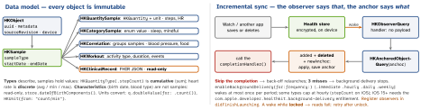

How it works
- Setup: HealthKit capability (+ Clinical Health Records only if used); plist
NSHealthShareUsageDescription (read), NSHealthUpdateUsageDescription (write). Xcode adds healthkit to required device capabilities — remove it if optional.
- Availability:
isHealthDataAvailable() first. iPhone, Watch, visionOS; iPad only from iPadOS 17; macOS links the framework but gets false. One store per app, kept.
- Authorization:
requestAuthorization(toShare:read:), per type. The sheet shows only for types not yet decided, then returns at once. Success = processed, not granted. authorizationStatus(for:) reports share only; getRequestStatusForAuthorization says whether a prompt would show.
- Read denied ⇒ you see only your own samples — so “has diabetes data” cannot leak through an error.
- Writing: build an
HKQuantitySample, save. You may delete only what you
saved. To “edit”: HKMetadataKeySyncIdentifier + a higher HKMetadataKeySyncVersion → HealthKit replaces the old sample. HKMetadataKeyWasUserEntered marks manual entries.
- Locked device: reads fail with
errorDatabaseInaccessible; saves still
work — staged, merged on unlock.
Example — steps per day, last 7 days (async, iOS 15.4+)
let store = HKHealthStore()
let steps = HKQuantityType(.stepCount)
guard HKHealthStore.isHealthDataAvailable() else { return }
try await store.requestAuthorization(toShare: [], read: [steps])
let cal = Calendar.current
let start = cal.date(byAdding: .day, value: -6, to: cal.startOfDay(for: .now))!
let week = HKQuery.predicateForSamples(withStart: start, end: .now)
let q = HKStatisticsCollectionQueryDescriptor(
predicate: .quantitySample(type: steps, predicate: week),
options: .cumulativeSum,
anchorDate: start,
intervalComponents: DateComponents(day: 1))
let days = try await q.result(for: store)
days.enumerateStatistics(from: start, to: .now) { s, _ in
print(s.startDate, s.sumQuantity()?.doubleValue(for: .count()) ?? 0) }
Workouts
watchOS: HKWorkoutSession + HKLiveWorkoutBuilder. iOS 17: HKWorkoutSession on iPhone/iPad (a Watch session can startMirroringToCompanionDevice). iOS 26: HKLiveWorkoutBuilder on iPhone/iPad — standalone: prepare() (countdown) → startActivity + beginCollection → delegate streams metrics → stopActivity, end, finishWorkout(). Heart rate needs an external strap; the phone locks → show a Live Activity. Logging one after the fact: HKWorkoutBuilder.
Why summing raw samples over-counts
Statistics queries merge overlapping sources, as Health does; summing raw samples (or .separateBySource totals) double-counts.
The query family
| HK…Query | Returns | Use for |
|---|
Sample | snapshot; sort, limit | latest readings |
Statistics | one sum / avg / min / max | today’s total |
StatisticsCollection | a statistic per interval | steps per day |
AnchoredObject | adds + deletes + anchor | server sync |
Observer | “changed” — no data | trigger, wake |
Async …QueryDescriptor (iOS 15.4+): result(for:) one-shot, results(for:) an AsyncSequence of updates. Persist HKQueryAnchor (NSSecureCoding).
Clinical records and App Review
HKClinicalRecord: FHIR (allergies, meds, labs), read-only, own plist key. 5.1.3(i): no health data for ads, marketing or data mining; third parties only for health research, with permission. (ii): no false data, no personal health information in iCloud. 2.5.1: health/fitness use, integrate with Health.
Traps
- “Was read denied?” is unknowable — design the empty state instead.
- Observer created in a view controller: a background wake finds no query. Register at launch.
doubleValue(for:) with an incompatible unit throws an ObjC exception — a crash, not a Swift error.- Buckets anchored at “now” split days at 14:32 — anchor at midnight.
Remember
Write status is visible, read status never is; statistics merge, samples don’t; the observer says
that, the anchor says what.